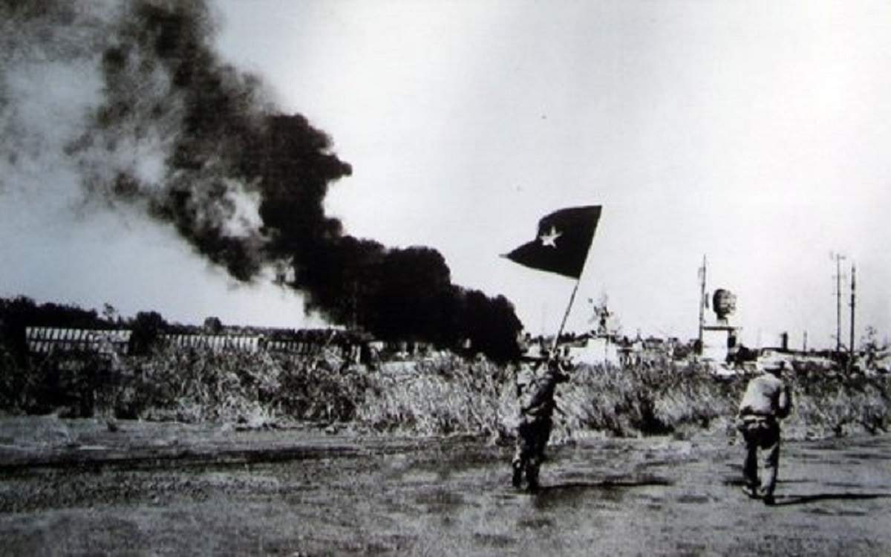
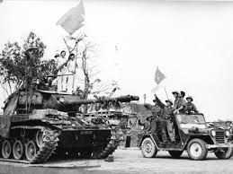
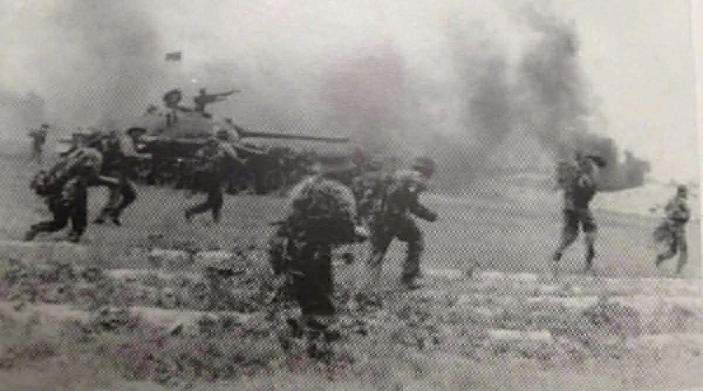
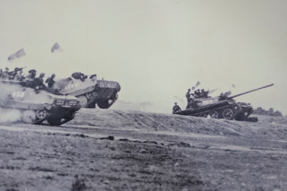
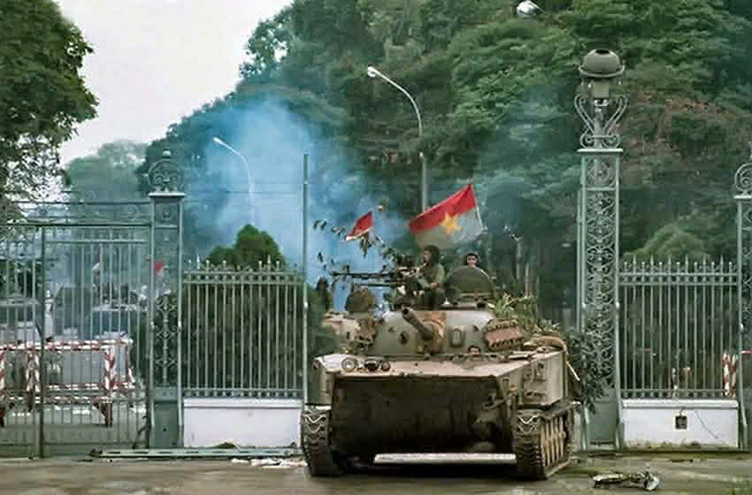
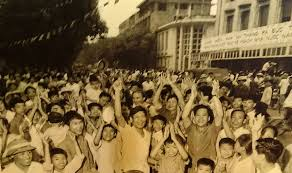

Chiến dịch Tây Nguyên mở đầu cuộc Tổng tiến công và nổi dậy mùa Xuân 1975. Quân ta tiến công Buôn Ma Thuột, làm tan rã hệ thống phòng thủ của quân Việt Nam Cộng hòa ở Tây Nguyên và buộc đối phương phải rút khỏi khu vực này. Thắng lợi của chiến dịch đã tạo ra bước ngoặt quan trọng cho cuộc chiến.
Sau thắng lợi ở Tây Nguyên, quân ta nhanh chóng tiến xuống miền Trung. Trong thời gian ngắn, quân ta giải phóng hoàn toàn thành phố Huế và sau đó là Đà Nẵng. Đây là một trong những thắng lợi lớn, làm cho quân đội Sài Gòn suy yếu nhanh chóng.
Xuân Lộc là tuyến phòng thủ quan trọng bảo vệ Sài Gòn từ phía Đông. Quân ta mở cuộc tấn công mạnh vào căn cứ này và sau nhiều ngày chiến đấu quyết liệt, đã phá vỡ tuyến phòng thủ cuối cùng của đối phương.
Chiến dịch Hồ Chí Minh là chiến dịch cuối cùng của cuộc Tổng tiến công mùa Xuân 1975. Quân giải phóng tiến vào Sài Gòn từ nhiều hướng. Ngày 30/4/1975, xe tăng tiến vào Dinh Độc Lập, chính quyền Sài Gòn đầu hàng, miền Nam hoàn toàn được giải phóng và đất nước thống nhất.
Kỷ nguyên mới: Mở ra thời kỳ Độc lập, Tự do và Chủ nghĩa xã hội trên toàn bộ lãnh thổ Việt Nam.
Sức mạnh đại đoàn kết: Khẳng định đường lối lãnh đạo đúng đắn của Đảng và tinh thần quật cường của con người Việt Nam.
Thống nhất non sông: Chấm dứt sự chia cắt hai miền Nam - Bắc kéo dài 21 năm (1954 - 1975).
Kết thúc ách thống trị: Xóa bỏ hoàn toàn chế độ thực dân mới của đế quốc Mỹ tại Việt Nam.
Chiến thắng 30/04 là minh chứng cho sức mạnh trí tuệ và lòng yêu nước. Thế hệ học sinh hôm nay nguyện ứng dụng kiến thức và công nghệ để tiếp bước cha ông, xây dựng đất nước Việt Nam ngày càng phát triển.





